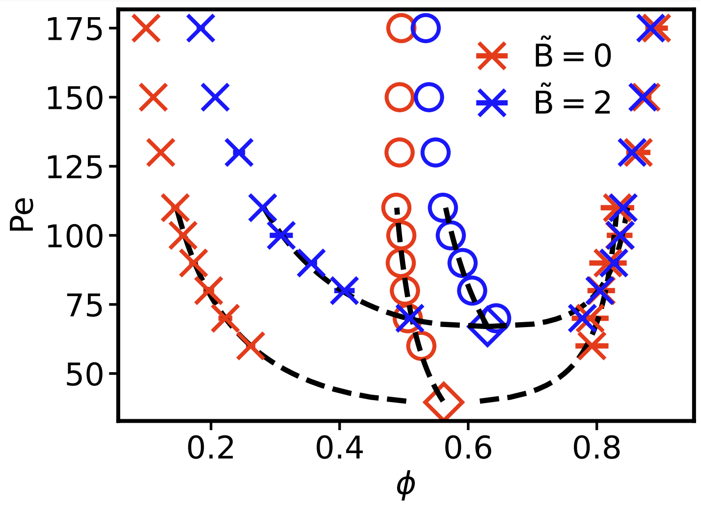
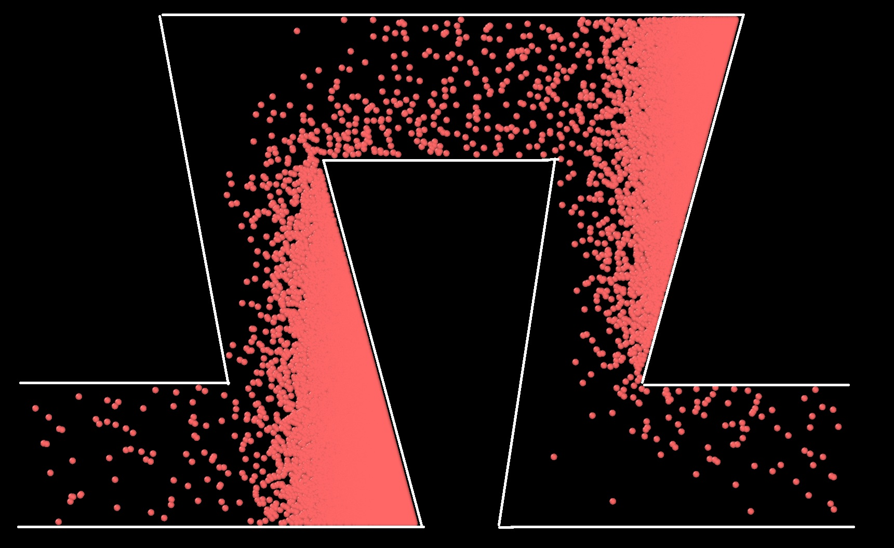
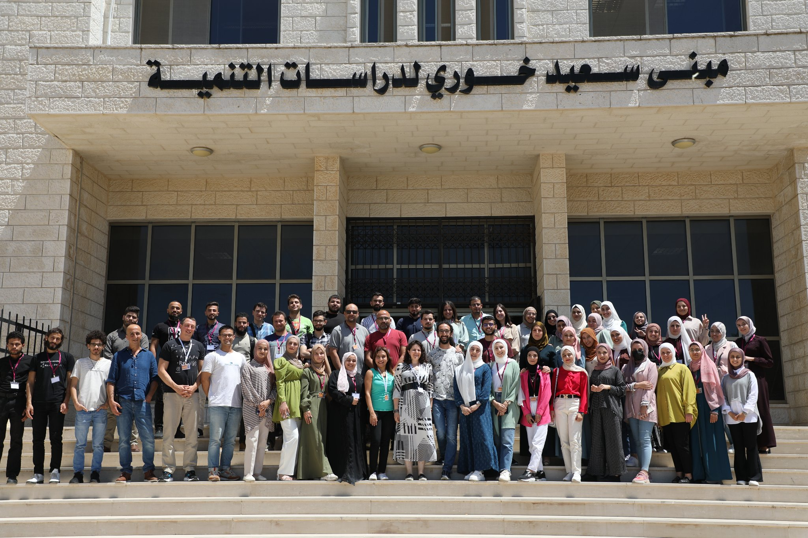
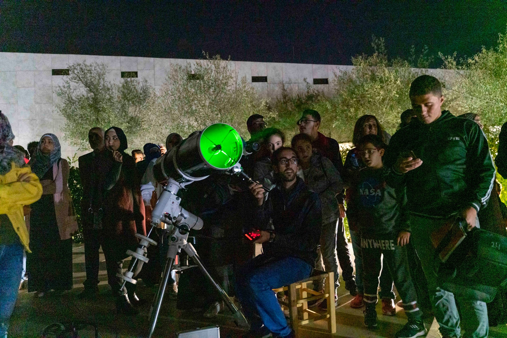

About Me
I am a 3rd year PhD Candidate at the University of Köln under the supervision of Prof. Dr. Gerhard Gompper.
I study Active matter under the effect of an alignment field.
Find my first publication Studying the effect of an alignment field on the dynamics of active matter and phase separation.
here!
Education:
July 2021 - Present: PhD Candidate in Physics, University of Köln, Germany
February 2016 - May 2020: MSc in Physics, Birzeit University, Palestine
September 2014 - February 2016: BSc in Physics, Minor in Computer Science, Birzeit University, Palestine
Publichations:
-
Feb 2024: S. Othman, J. Midya, T. Auth, G. Gompper. Phase Behavior and Dynamics of Active Brownian Particles in an Alignment Field. DOI: Link.
-
Jul 2022: S. Othman, J. Schulz, M. Baity-Jesi, C. De Bacco. Modeling Node Exposure for Community Detection in Networks. DOI: Link.
-
Mar 2018: Q. Yu, S. Othman, S. Dasgupta, T. Auth, G. Gompper. Nanoparticle wrapping at small non-spherical vesicles: curvatures at play. DOI: Link.
-
May 2017: H. Abusara, Shakeb Ahmad, S. Othman. Triaxiality softness and shape coexistence in Mo and Ru isotopes. DOI: Link.
-
May 2020: S. Othman, A. Sayyed-Ahmad, T. Auth. Nanoparticle-Membrane Interactions a systematic study of the electric charge contribution to the wrapping process. DOI: Link.
Research


We use molecular dynamics simulations to study the effect of an alignment field on the dynamics of active matter and phase separation. We find that the alignment field shifts the critical point of the phase separation, and that the dynamics of the system are significantly affected by the alignment field. Our results provide insight into the behavior of active matter systems and may have implications for the design of new materials and technologies.
I am currently working on studying the flow of active matter in a confinement. Where I am looking into the global and local flux profile throughout the channel with the velocity and density profile differences as a function of the channel gemoteries.
The system is flexible to allow for the study of different channel geometries, such as a straight channel, a channel with a constriction, and a channel with a bifurcation. The system is also flexible to allow for the study of different active matter models, such as mixture of active matter and passive matter, or a mixture of active matter with different sizes.

Activities
Teaching:
Carpentries Instructor: I am certified to teach foundational coding and data science skills. I taught in multiple courses on Git, Bash, Python, and Python libraries as a solo instructor and co-instructor to researchers worldwide.
Code/Astro Workshop Teaching Assitant:
I have also served as a teaching assistant and organizer for Code/Astro, conducting both online and in-person sessions for several years.

Science & Outreach:
Scientist For Palestine:
As a steering committee member of Scientists For Palestine, I am dedicated to fostering scientific collaboration and advocating for the rights of Palestinian scientists to engage in global research networks.
As part of the schools committee, I have organized and managed four summer schools for graduate students from all Palestinian universities given by international experts in various fields. Visit here for more information.

Nova for Astronomy and Space Science:
A founding member of NOVA for Astronomy and Space Science in Palestine. Member of the board of trustes and head of the financial committee for two rounds. We have organized public, and private events, and have visited schools to teach part of the local curriculum. We aim to teach and promote astronomy through lectures, activities, workshops, trainings, and observations.

Contact
Conferences:
Feb 2025 - Invited talk, University of Suttgart, Suttgart, Germany. Talk.
May 2024 - Annual Meeting SoftComp, Lyon, France. Poster.
May 2023 - Annual Meeting SoftComp, Ancona, Italy. Talk.
May 2023 - Invited talk, University of Burgundy, Dijon, France. Talk.
Sep 2022 - NIC Symposium , FZJ, Juelich, Germany. Poster.
Sep 2019 - 1st Summer School in Astrophysics and Space Science, Amman, Jordan.
Jul 2019 - Jordanian School of Space Sciences II, Amman, Jordan.
Sep 2018 - The current and future observing facilities, Belgrade, Serbia.
Feb 2018 - 49th IFF Spring School, Physics of Life, FZJ, Juelich, Germany.
Jan 2018 - Filaments, Membranes, Cells and their Interactions, FZJ, Juelich, Germany. Poster.
Nov 2016 - First Arab Winter School for Astrophysics, Marrakesh, Morroco.
Dec 2015 - The 4th Arab Innovation Network Annual Conference, Amman, Jordan. University representative.
Nov 2014 - Jülich Soft Matter Days 2014, Bonn, Germany.
Nov 2014 - IHRS BioSoft Symposium 2014, FZJ, Juelich, Germany.
Workshops:
Sep 2020 - Astro Hack Week , Online.
Aug 2020 - DotdotAstro, DotAstronomy, Online.
Jun 2020 - A Software Engineering Workshop for Astronomy, Online.
Apr 2019 - Molecular Dynamic Simulation, Birzeit University, Ramallah. Teaching assitant.
Jul 2017 - International Astronomy Youth Camp, El Solitario, Banos de Montemayor, Spain.
Jul 2016 - International Astronomy Youth Camp, Nettlecombe court, United Kingdom.
Contact
Email:
sameh.othman@hotmail.com
Address:
Esslingen Am Neckar 73728, Germany